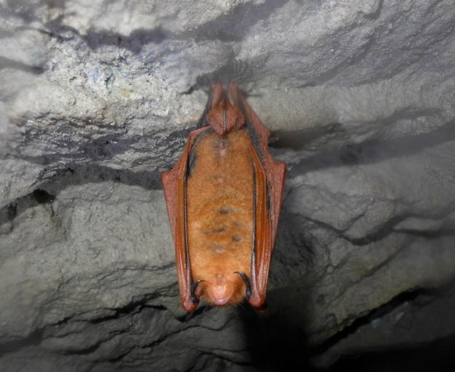

붉은박쥐

주요특징 및 설명
- 종명: 붉은박쥐(copper-winged bat)
- 학명: Lutra lutra
- 생물학적 분류: 애기박쥐과 큰수염박쥐속
- 분포: 한국, 일본, 필리핀
- 등급: 멸종위기종 Ⅱ급, 천연기념물 제452호
- 주요 특징
붉은박쥐는 ‘황금박쥐’, ‘오렌지윗수염박쥐’라고도 불린다.
동굴에서 생활하며 11월에서 다음해 3월까지 겨울잠을 잔다.
여름에는 대나무밭이나 수풀 등에서 쉬기도 한다. 주된 먹이는 곤충이며, 5마리 정도 무리를 이루며 지낸다.